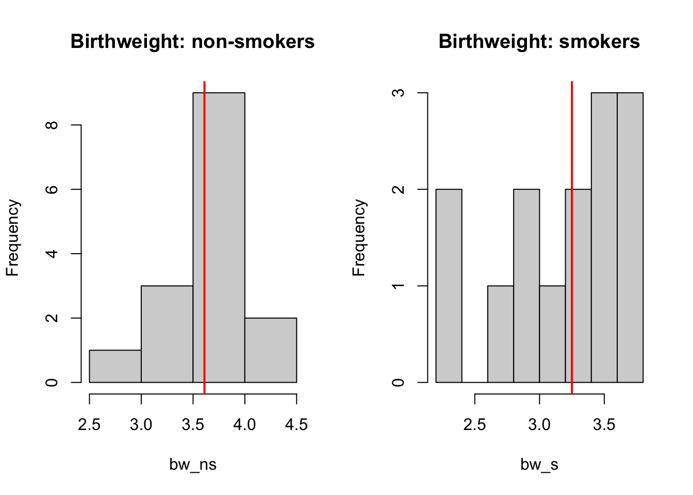

# x, y are two unpaired vectors. Do not necessary need to be of the same length.
stats::wilcox.test(x, y, paired = FALSE)Wilcoxon Rank Sum (Mann Whitney-U) in R
Overview
Wilcoxon rank sum test, or equivalently, Mann-Whitney U-test is a rank based non-parametric method. The aim is to compare two independent groups of observations. Under certain scenarios, it can be thought of as a test for median differences, however this is only valid when: 1) both samples are independent and identically distributed (same dispersion, same shape, not necessarily normal) and 2) are symmetric around their medians.
Generally, with two samples of observations (A and B), the test uses the mean of each possible pair of observations in each group (including the pair of each value with itself) to test if the probability that (A>B) > probability (B>A).
The Wilcoxon rank sum test is often presented alongside a Hodges-Lehmann estimate of the pseudo-median (the median of the Walsh averages), and an associated confidence interval for the pseudo-median.
A tie in the data exists when an observation in group A, has the same result as an observation in group B.
Available R packages
There are three main implementations of the Wilcoxon rank sum test in R.
The stats package implements various classic statistical tests, including Wilcoxon rank sum test. Although this is arguably the most commonly applied package, this one does not account for any ties in the data. To account for ties in the data, the coin or asht package should be used.
Example: Birth Weight
Data source: Table 30.4, Kirkwood BR. and Sterne JAC. Essentials of medical statistics. Second Edition. ISBN 978-0-86542-871-3
Comparison of birth weights (kg) of children born to 15 non-smokers with those of children born to 14 heavy smokers.
# bw_ns: non smokers
# bw_s: smokers
bw_ns <- c(3.99, 3.89, 3.6, 3.73, 3.31,
3.7, 4.08, 3.61, 3.83, 3.41,
4.13, 3.36, 3.54, 3.51, 2.71)
bw_s <- c(3.18, 2.74, 2.9, 3.27, 3.65,
3.42, 3.23, 2.86, 3.6, 3.65,
3.69, 3.53, 2.38, 2.34)We do note that there are ties present in the data. Can visualize the data on two histograms. Red lines indicate the location of medians.
par(mfrow =c(1,2))
hist(bw_ns, main = 'Birthweight: non-smokers')
abline(v = median(bw_ns), col = 'red', lwd = 2)
hist(bw_s, main = 'Birthweight: smokers')
abline(v = median(bw_s), col = 'red', lwd = 2)
It is possible to see that for non-smokers, the median birthweight is higher than those of smokers. Now we can formally test it with wilcoxon rank sum test.
stats::wilcox.test()
In stats::wilcox.test() the exact p-value is computed when there are less than 50 values and no ties otherwise the normal approximation is used. In our data case, because there are ties the normal approximation is used.
The default for the normal approximation is to use a continuity correction. One can add the argument correct=FALSE to not perform a continuity correction.
# default is two sided
stats::wilcox.test(bw_s, bw_ns, paired = FALSE)Warning in wilcox.test.default(bw_s, bw_ns, paired = FALSE): cannot compute
exact p-value with ties
Wilcoxon rank sum test with continuity correction
data: bw_s and bw_ns
W = 45.5, p-value = 0.01001
alternative hypothesis: true location shift is not equal to 0stats::wilcox.test(bw_s, bw_ns, paired = FALSE, correct = FALSE)Warning in wilcox.test.default(bw_s, bw_ns, paired = FALSE, correct = FALSE):
cannot compute exact p-value with ties
Wilcoxon rank sum test
data: bw_s and bw_ns
W = 45.5, p-value = 0.009392
alternative hypothesis: true location shift is not equal to 0We can also carry out a one-sided test, by specifying alternative = "less" (if the first group is expected to be smaller than the second group) or alternative = "greater".
# perform one-sided test
stats::wilcox.test(bw_s, bw_ns, paired = FALSE, alternative = "less")Warning in wilcox.test.default(bw_s, bw_ns, paired = FALSE, alternative =
"less"): cannot compute exact p-value with ties
Wilcoxon rank sum test with continuity correction
data: bw_s and bw_ns
W = 45.5, p-value = 0.005003
alternative hypothesis: true location shift is less than 0By setting conf.int=TRUE a confidence interval of the location parameter (x-y) is computed. Note that in the two-sample case the estimator for the difference in location parameters does not estimate the difference in medians (a common misconception) but rather the median of the difference between a sample from x and a sample from y. Note that the algorithm used for the estimation of the location parameter and confidence interval is not discussed in the help of the function (in the source code of the stats::wilcox.test() it is only mentioned that “Algorithm not published, thus better documented here.”).
By default a 95% confidence interval is provided. This can be changed by the argument conf.level.
# Add conf.int = TRUE
stats::wilcox.test(bw_s, bw_ns, paired = FALSE, conf.int = TRUE)Warning in wilcox.test.default(bw_s, bw_ns, paired = FALSE, conf.int = TRUE):
cannot compute exact p-value with tiesWarning in wilcox.test.default(bw_s, bw_ns, paired = FALSE, conf.int = TRUE):
cannot compute exact confidence intervals with ties
Wilcoxon rank sum test with continuity correction
data: bw_s and bw_ns
W = 45.5, p-value = 0.01001
alternative hypothesis: true location shift is not equal to 0
95 percent confidence interval:
-0.76995896 -0.09000999
sample estimates:
difference in location
-0.4261377 The argument exact = TRUE can be added to ask for an exact p-value to be computed. However, in our data case as there are ties this does not work.
# force exact, but does not work because we have ties
stats::wilcox.test(bw_s, bw_ns, paired = FALSE, conf.int = TRUE, exact = TRUE)Warning in wilcox.test.default(bw_s, bw_ns, paired = FALSE, conf.int = TRUE, :
cannot compute exact p-value with tiesWarning in wilcox.test.default(bw_s, bw_ns, paired = FALSE, conf.int = TRUE, :
cannot compute exact confidence intervals with ties
Wilcoxon rank sum test with continuity correction
data: bw_s and bw_ns
W = 45.5, p-value = 0.01001
alternative hypothesis: true location shift is not equal to 0
95 percent confidence interval:
-0.76995896 -0.09000999
sample estimates:
difference in location
-0.4261377 coin::wilcox_test()
In order to account for the ties, wilcox_test from the coin package should be used. For this function, the data needs to be inputted via a formula where the right hand side is a factor, so we need to create a dataset. In order to get results for smokers - non-smokers we need to relevel the factors.
smk_data <- data.frame(
value = c(bw_ns, bw_s),
smoke = as.factor(rep(c("non", "smoke"), c(length(bw_ns), length(bw_s))))
)
smk_data$smoke <- forcats::fct_relevel(smk_data$smoke, "smoke")
smk_data$smoke [1] non non non non non non non non non non non non
[13] non non non smoke smoke smoke smoke smoke smoke smoke smoke smoke
[25] smoke smoke smoke smoke smoke
Levels: smoke nonNow the data is in the right shape we can run wilcox_test. By default, coin::wilcox_test does a normal approximation approach without continuity correction. One can add again alternative="less" (or alternative="greater") for one-sided testing.
coin::wilcox_test(value ~ smoke, data = smk_data)
Asymptotic Wilcoxon-Mann-Whitney Test
data: value by smoke (smoke, non)
Z = -2.5974, p-value = 0.009392
alternative hypothesis: true mu is not equal to 0We do note that a normal approximation approach with continuity correction cannot be obtained with this function. One can add correct=FALSE, but note that no error is given and the results of a normal approximation approach without continuity correction is provided.
coin::wilcox_test(value ~ smoke, data = smk_data, correct=FALSE)
Asymptotic Wilcoxon-Mann-Whitney Test
data: value by smoke (smoke, non)
Z = -2.5974, p-value = 0.009392
alternative hypothesis: true mu is not equal to 0By including the conf.int = TRUE argument, confidence intervals for the difference in location are computed. According to the coin package documentation this is done according to Bauer (1972) [Bauer, D. F. (1972). Constructing confidence sets using rank statistics. Journal of the American Statistical Association 67(339), 687–690] and Hollander and Wolfe (1999) [Hollander, M. and Wolfe, D. A. (1999). Nonparametric Statistical Methods, Second Edition. New York: John Wiley & Sons.]. Note that the conf.level argument controls the confidence level, but must be used with conf.int = TRUE otherwise you won’t get a confidence interval.
coin::wilcox_test(value ~ smoke, data = smk_data, conf.int = TRUE)
Asymptotic Wilcoxon-Mann-Whitney Test
data: value by smoke (smoke, non)
Z = -2.5974, p-value = 0.009392
alternative hypothesis: true mu is not equal to 0
95 percent confidence interval:
-0.76000001 -0.09999999
sample estimates:
difference in location
-0.4261403 Using coin one can calculate exact and Monte Carlo conditional p-values using the distribtuion argument. The exact p-value is best used in small sample sizes.
coin::wilcox_test(value ~ smoke, data = smk_data, conf.int = TRUE,
distribution = "exact")
Exact Wilcoxon-Mann-Whitney Test
data: value by smoke (smoke, non)
Z = -2.5974, p-value = 0.008181
alternative hypothesis: true mu is not equal to 0
95 percent confidence interval:
-0.76 -0.10
sample estimates:
difference in location
-0.425 For doing an approximative (Monte Carlo) (with 500 and 500000 samples) the following code can be used.
coin::wilcox_test(value ~ smoke, data = smk_data, conf.int = TRUE,
distribution = approximate(nresample = 500))
Approximative Wilcoxon-Mann-Whitney Test
data: value by smoke (smoke, non)
Z = -2.5974, p-value = 0.012
alternative hypothesis: true mu is not equal to 0
95 percent confidence interval:
-0.72 -0.08
sample estimates:
difference in location
-0.425 coin::wilcox_test(value ~ smoke, data = smk_data, conf.int = TRUE,
distribution = approximate(nresample = 500000))
Approximative Wilcoxon-Mann-Whitney Test
data: value by smoke (smoke, non)
Z = -2.5974, p-value = 0.008142
alternative hypothesis: true mu is not equal to 0
95 percent confidence interval:
-0.76 -0.10
sample estimates:
difference in location
-0.425 asht::wmwTest()
The asht::wmwTest() function calculates the Wilcoxon-Mann-Whitney test (normal approximation, exact complete enumeration, and exact Monte Carlo implementation) together with confidence intervals on the Mann-Whitney parameter, Pr[X<Y] + 0.5 Pr[X=Y].
By default, the function returns the normal approximation using a continuity correction. The correct argument is available to turn-off the continuity correction. The alternative argument is available for one-sided testing. By default, the 95% confidence interval is calculated for the Mann-Whitney parameter (use argument conf.int and conf.level to change these defaults.). Details on the calculation of the confidence interval are provided in Newcombe (2006) [Newcombe, Robert G. (2006). Confidence intervals for an effect size measure based on the Mann-Whitney statistic. Part 2: asymptotic methods and evaluation. Statistics in medicine 25(4): 559-573].
wmwTest(bw_s, bw_ns)
Wilcoxon-Mann-Whitney test with continuity correction (confidence
interval requires proportional odds assumption, but test does not)
data: bw_s and bw_ns
Mann-Whitney estimate = 0.78333, tie factor = 0.99951, p-value =
0.01001
alternative hypothesis: two distributions are not equal
95 percent confidence interval:
0.5696522 0.9030435
sample estimates:
Mann-Whitney estimate
0.7833333 Using the method argument one can change from normal approximation to exact complete enumeration (method = "exact.ce"), and exact Monte Carlo (method = "exact.mc") implementation. When method = "exact.mc", the test is implemented using complete enumeration of all permutations, and hence is only tractible for very small sample sizes (less than 10 in each group). Here, we show an example of method = "exact.mc".
wmwTest(bw_s, bw_ns,
method = "exact.mc", control = wmwControl(nMC = 100000))
exact Wilcoxon-Man-Whitney test (Monte Carlo with nMC=1e+05)
(confidence interval requires proportional odds assumption, but test
does not)
data: bw_s and bw_ns
Mann-Whitney estimate = 0.78333, p-value = 0.0085
alternative hypothesis: two distributions are not equal
95 percent confidence interval:
0.5759003 0.9335271
sample estimates:
Mann-Whitney estimate
0.7833333